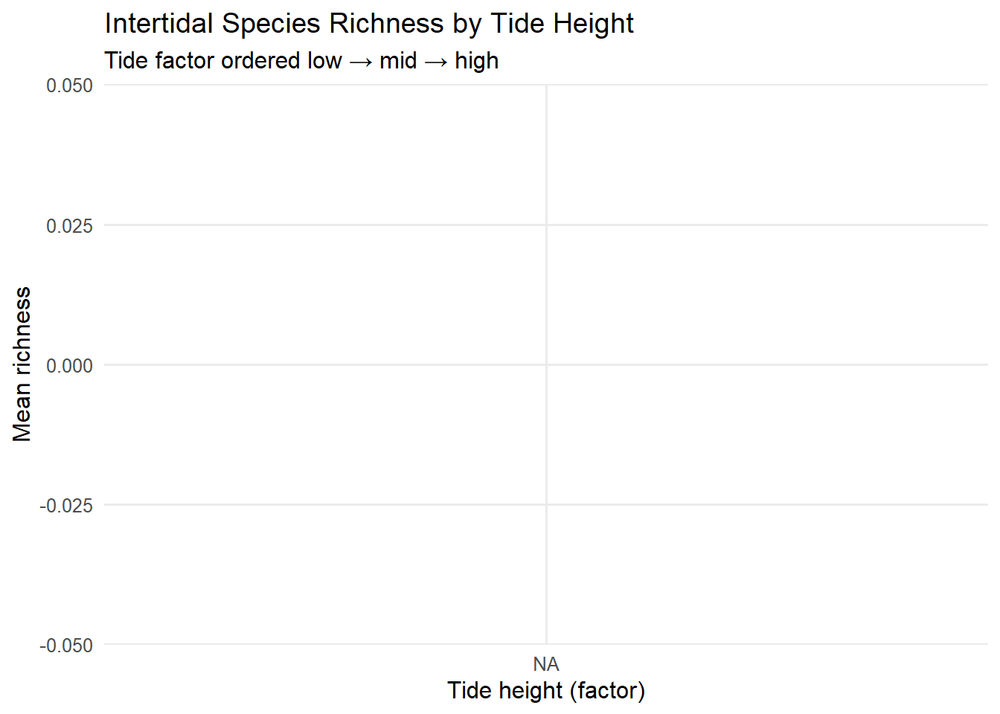

library(tidyverse)
library(janitor)
library(here)
# ensure output folder exists
dir.create(here("Week_09","output"), recursive = TRUE, showWarnings = FALSE)Week 09 — Intertidal Analysis
# Intertidal main table (tab-delimited)
inter <- readr::read_tsv(
here("Week_09","data","intertidaldata.csv"),
show_col_types = FALSE, na = c("", "NA")
) |>
janitor::clean_names()
# Latitude lookup (robust)
lat_path <- here("Week_09","data","intertidaldata_latitude.csv")
# try TSV, then CSV; if either works, always take the FIRST TWO columns
lat_raw <- tryCatch(
readr::read_tsv(lat_path, show_col_types = FALSE, na = c("", "NA")),
error = function(e) tryCatch(
readr::read_csv(lat_path, show_col_types = FALSE, na = c("", "NA")),
error = function(e2) NULL
)
)
# If still NULL or only 1 column, fall back to manual split on TAB or COMMA
if (is.null(lat_raw) || ncol(lat_raw) < 2) {
lines <- readr::read_lines(lat_path)
lines <- lines[nzchar(lines)]
stopifnot(length(lines) >= 2)
header <- strsplit(lines[1], "[\t,]")[[1]]
rows <- lapply(lines[-1], function(x) {
parts <- strsplit(x, "[\t,]")[[1]]
length(parts) <- 2
parts
})
mat <- do.call(rbind, rows)
lat_raw <- tibble::as_tibble(mat, .name_repair = "minimal")
if (length(header) >= 2) names(lat_raw) <- header[1:2]
}
# Clean and force the first two columns to the names we expect
lat_tbl <- lat_raw |>
janitor::clean_names() |>
dplyr::select(1:2) |>
rlang::set_names(c("site","latitude")) |>
dplyr::mutate(
site = as.character(site),
latitude = readr::parse_number(as.character(latitude))
) |>
dplyr::filter(!is.na(site), !is.na(latitude))# Find the tide/quadrat column
quad_col <- names(inter)[stringr::str_detect(names(inter), stringr::regex("quadrat|\\bquad\\b", ignore_case = TRUE))][1]
stopifnot(!is.na(quad_col))
# Find the site/location column automatically
site_col <- names(inter)[stringr::str_detect(names(inter), stringr::regex("site|location", ignore_case = TRUE))][1]
stopifnot(!is.na(site_col))
# Normalize tide height values
inter2 <- inter |>
dplyr::mutate(
tide_height = tolower(trimws(.data[[quad_col]])),
tide_height = stringr::str_replace_all(tide_height, "[^a-z]", ""),
tide_height = factor(tide_height, levels = c("low","mid","high"))
)
# Order sites south → north (by latitude)
site_order <- lat_tbl |>
dplyr::arrange(latitude) |>
dplyr::pull(site)
# Apply site ordering dynamically
inter3 <- inter2 |>
dplyr::mutate(!!site_col := factor(.data[[site_col]], levels = site_order))
# rename for consistency downstream
names(inter3)[names(inter3) == site_col] <- "site"# Likely organism columns after clean_names():
candidate_org <- c(
"bare_rock","algae","mussels","small_barnacles","large_barnacles",
"gooseneck_barnacles","anemone","whelks_counts","crabs_counts","stars_counts"
)
present_cols <- intersect(names(inter3), candidate_org)
# Richness proxy per quadrat = count of taxa > 0
inter_rich <- inter3 |>
rowwise() |>
mutate(richness = sum(c_across(all_of(present_cols)) > 0, na.rm = TRUE)) |>
ungroup()
# Mean richness by tide height (factor axis)
plot_dat <- inter_rich |>
group_by(tide_height) |>
summarise(mean_richness = mean(richness, na.rm = TRUE), .groups = "drop")
p <- ggplot(plot_dat, aes(x = tide_height, y = mean_richness, fill = tide_height)) +
geom_col(width = 0.7) +
scale_fill_brewer(palette = "Set2", guide = "none") +
labs(
title = "Intertidal Species Richness by Tide Height",
subtitle = "Tide factor ordered low → mid → high",
x = "Tide height (factor)", y = "Mean richness"
) +
theme_minimal(base_size = 12) +
theme(panel.grid.minor = element_blank())
p
ggsave(
here("Week_09","output","intertidal_richness_by_tide.png"),
p, width = 8, height = 5, dpi = 320
)levels(inter3$tide_height)[1] "low" "mid" "high"head(levels(inter3$site), 10) [1] "Scripps" "Dana Point" "Crystal Cove" "Little Corona"
[5] "Carpenteria" "Shell Beach" "Hazards" "Cambria"
[9] "Bodega" "Point St. George"